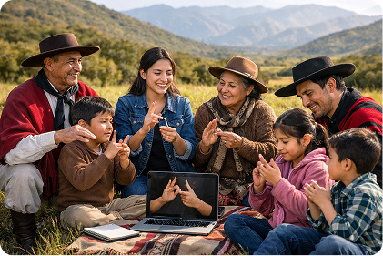

Somos una comunidad salteña que promueve la Lengua de Señas Argentina (LSA) como puente de
inclusión y aprendizaje. Creemos que comunicar es conectar, y por eso creamos este espacio
donde adultos y niños aprenden juntos, compartiendo cultura, respeto y empatía. Desde el
corazón de Salta, trabajamos para que la lengua de

Instagram: manosquehablan_ok
Por Whatsapp al numero: 387 039 9777